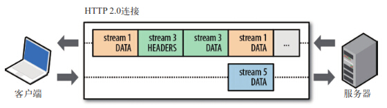
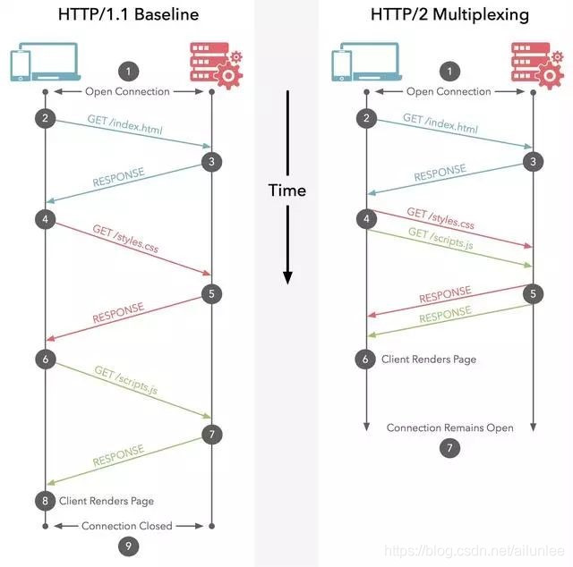
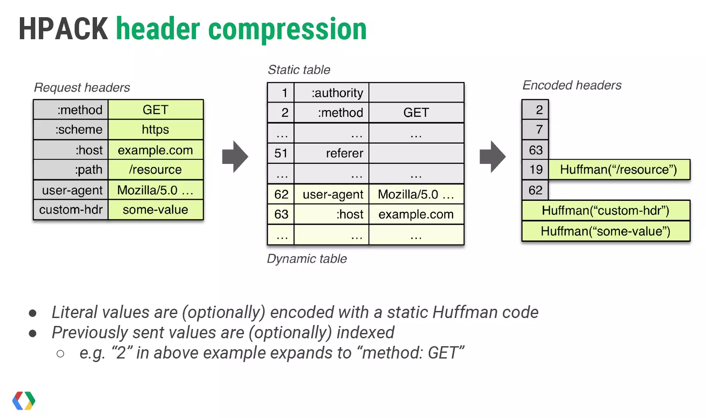
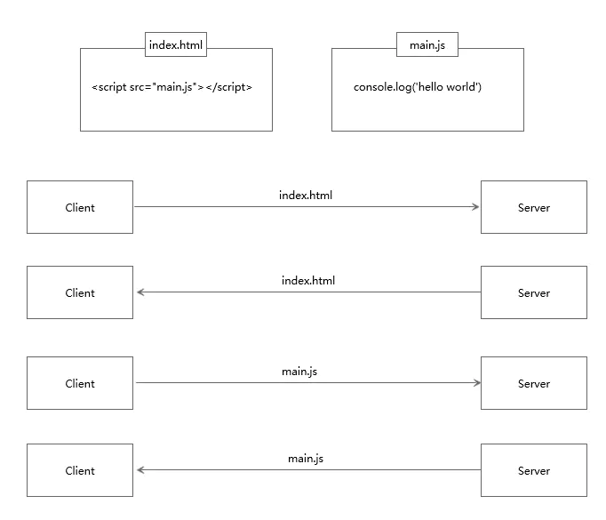
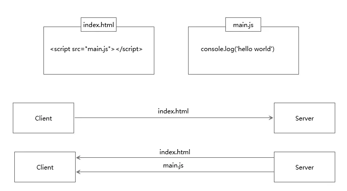

- http1.0与http1.1区别
- http2.0的特点
- http1.1与http2.0区别
- 混淆的问题
http1.0与http1.1区别
- 长连接(Persistent Connection)
HTTP1.1支持长连接和请求的流水线处理，在一个TCP连接上可以传送多个HTTP请求和响应，减少了建立和关闭连接的消耗和延迟，在HTTP1.1中默认开启长连接keep-alive，一定程度上弥补了HTTP1.0每次请求都要创建连接的缺点。HTTP1.0需要使用keep-alive参数来告知服务器端要建立一个长连接。
HTTP 1.1的持续连接，也需要增加新的请求头来帮助实现，例如，Connection请求头的值为Keep-Alive时，客户端通知服务器返回本次请求结果后保持连接；Connection请求头的值为close时，客户端通知服务器返回本次请求结果后关闭连接。HTTP 1.1还提供了与身份认证、状态管理和Cache缓存等机制相关的请求头和响应头。 - 节约带宽
HTTP1.0中存在一些浪费带宽的现象，例如客户端只是需要某个对象的一部分，而服务器却将整个对象送过来了，并且不支持断点续传功能。HTTP1.1支持只发送header信息（不带任何body信息），如果服务器认为客户端有权限请求服务器，则返回100，客户端接收到100才开始把请求body发送到服务器；如果返回401，客户端就可以不用发送请求body了节约了带宽。
- HOST域
在HTTP1.0中认为每台服务器都绑定一个唯一的IP地址，因此，请求消息中的URL并没有传递主机名（hostname），HTTP1.0没有host域。随着虚拟主机技术的发展，在一台物理服务器上可以存在多个虚拟主机（Multi-homed Web Servers），并且它们共享一个IP地址。HTTP1.1的请求消息和响应消息都支持host域，且请求消息中如果没有host域会报告一个错误（400 Bad Request）。
- 请求方法
HTTP1.1增加了OPTIONS，PUT，DELETE，TRACE，CONNECT的请求方法。
- 缓存处理
在HTTP1.0中主要使用header里的If-Modified-Since,Expires来做为缓存判断的标准，HTTP1.1则引入了更多的缓存控制策略例如Entity tag，If-Unmodified-Since, If-Match, If-None-Match等更多可供选择的缓存头来控制缓存策略。
- 状态码
在HTTP1.1中新增了24个错误状态响应码，如409（Conflict）表示请求的资源与资源的当前状态发生冲突；410（Gone）表示服务器上的某个资源被永久性的删除。
http2.0的特点
二进制分帧层
HTTP 2.0性能增强的核心，全在于新增的二进制分帧层，它定义了如何封装HTTP消息并在客户端与服务器之间传输。
流、消息和帧
- 流：已建立的连接的双向字节流
- 消息：与逻辑消息对应的完整的一系列数据帧
- 帧：HTTP2.0通信的最小单位，每个帧包含帧首部，至少也会标识出当前帧所属的流
所有HTTP 2.0通信都在一个连接上完成，这个连接可以承载任意数量的双向数据流。
每个数据流以消息的形式发送，而消息由一或多个帧组成，这些帧可以乱序发送，然后再根据每个帧首部的流标识符重新组装。
简言之，HTTP 2.0把HTTP协议通信的基本单位缩小为一个一个的帧，这些帧对应着逻辑流中的消息。
相应地，很多流可以并行地在同一个TCP连接上交换消息。多向请求与响应
在HTTP 1.x中，如果客户端想发送多个并行的请求以及改进性能，那么必须使用多个TCP连接。
HTTP 2.0中的二进制分帧层突破了限制：客户端和服务器可以把HTTP消息分解为互不依赖的帧，然后乱序发送，最后再在另一端把它们重新组合起来。
请求优先级
每个HTTP2.0流里面有个优先值，这个优先值确定着客户端和服务器处理不同的流采取不同的优先级策略，高优先级的流都应该优先发送，但又不会绝对的。绝对地准守，可能又会引入首队阻塞的问题：高优先级的请求慢导致阻塞其他资源交付。分配处理资源和客户端与服务器间的带宽，不同优先级的混合也是必须的。http1.1与http2.0区别
多路复用
HTTP2.0使用了多路复用的技术，做到同一个连接并发处理多个请求，而且并发请求的数量比HTTP1.1大了好几个数量级。HTTP1.1也可以多建立几个TCP连接，来支持处理更多并发的请求，但是创建TCP连接本身也是有开销的。

头部数据压缩（深入了解头部压缩）
在HTTP1.1中，HTTP请求和响应都是由状态行、请求/响应头部、消息主体三部分组成。一般而言，消息主体都会经过gzip压缩，或者本身传输的就是压缩过后的二进制文件，但状态行和头部却没有经过任何压缩，直接以纯文本传输。随着Web功能越来越复杂，每个页面产生的请求数也越来越多，导致消耗在头部的流量越来越多，尤其是每次都要传输UserAgent、Cookie这类不会频繁变动的内容，完全是一种浪费。
HTTP1.1不支持header数据的压缩，HTTP2.0使用HPACK算法对header的数据进行压缩，这样数据体积小了，在网络上传输就会更快。

HTTP 2.0连接的两端都知道已经发送了哪些首部，这些首部的值是什么，从而可以针对之前的数据只编码发送差异数据。头部数据通过字典存储(键值对)的形式进行存储
服务器推送
服务端推送是一种在客户端请求之前发送数据的机制。网页使用了许多资源：HTML、样式表、脚本、图片等等。在HTTP1.1中这些资源每一个都必须明确地请求。这是一个很慢的过程。浏览器从获取HTML开始，然后在它解析和评估页面的时候，增量地获取更多的资源。因为服务器必须等待浏览器做每一个请求，网络经常是空闲的和未充分使用的。
为了改善延迟，HTTP2.0引入了server push，它允许服务端推送资源给浏览器，在浏览器明确地请求之前，免得客户端再次创建连接发送请求到服务器端获取。这样客户端可以直接从本地加载这些资源，不用再通过网络。普通的客户端请求过程：
服务端推送的过程：

混淆的问题
HTTP2.0的多路复用和HTTP1.X中的长连接复用有什么区别？
HTTP/1.0 一次请求-响应，建立一个连接，用完关闭；每一个请求都要建立一个连接；
HTTP/1.1 Pipeling解决方式为，若干个请求排队串行化单线程处理，后面的请求等待前面请求的返回才能获得执行机会，一旦有某请求超时等，后续请求只能被阻塞，毫无办法，也就是人们常说的线头阻塞；
HTTP/2多个请求可同时在一个连接上并行执行。某个请求任务耗时严重，不会影响到其它连接的正常执行；